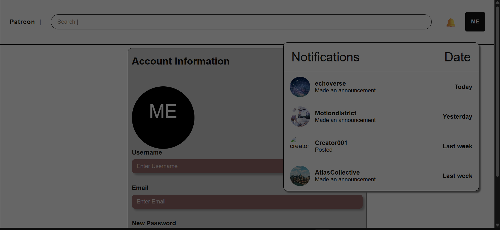

Patreon Website Redesign
A team redesign project focused on improving clarity, navigation, and overall usability. My work centered on search behavior, page linking, top bar styling, overlays, and front-end cleanup.
Search interactions
Linking
UI polish
Why this is the main project here
This project gives me the best example of how I work through a build. It includes research, wireframes, redesign decisions, debugging, team collaboration, and a finished front-end that changed a lot over time.
It also shows the parts I naturally move toward in group work: making interactions behave correctly, tightening the visual structure, and fixing the details that can make a site feel unfinished.